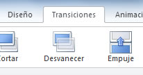

Animar presentación
Una presentación se puede animar en dos aspectos:
- Animando cómo pasar de una diapositiva a otra. A esto se le llama transición.
- Animando los objetos de las diapositivas
En este tema aprenderemos los dos tipos de animaciones. Para empezar, veamos la transición entre diapositivas.
Actualmente la versión 2010 ofrece transiciones de diapositivas nuevas y dinámicas, y efectos de animación que presentan un aspecto similar al de los gráficos vistos en TV.
Ademas de obtener acceso y una vista previa de las animaciones, y se podrán aplicar a toda la presentación, personalizar o bien reemplazar con mucha facilidad a comparación de las otras versiones
1. Primero seleccione la diapositiva a la que desea agregar el efecto de transición.
2. Seleccione la ficha "Transiciones" (transitions). Se mostraran las opciones para configurar la transición de la diapositiva.

3. Seleccionar la transición de diapositiva deseada. En esta versión, la lista se despliega dando clic en los cuadros de texto, muchas de estas nuevas transiciones son divertidas y acaban con la monotonía de las
transiciones que se aplicaban en versiones anteriores.
4. Oprima el botón "Aplicar" (Apply) para que el efecto de transición se aplique a la diapositiva seleccionada; u oprima el botón "Aplicar a todas" (Apply to all slides) para que todas las diapositivas de la presentación
tengan el mismo efecto de transición.